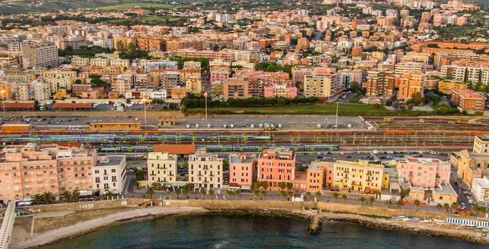
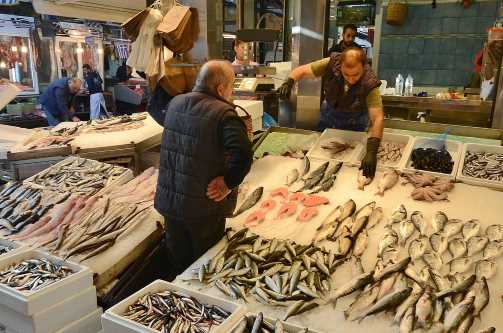

Fish Haven
Weather Summary
Currently:
High: °F
Wind Chill:
Humidity: %
Wind Speed: mph
Five Day Forecast
° F
° F
° F
° F
° F
The Best Fish In The Market
Why would we be named Fish Haven if it wasn't for our excelent
production in fish?
It has been demonstrated that people who eat fish are happier
and live longer. We want you happy and we want you to stay on
this earth for a really good time.
Our market has the best option in all sea food you can think
of, so come and join us! Come and see!
During the last year, our town has become one of the most popular
places to find the best fish. It has been our community that has
created this, and we are proud of our people, we are proud of our
culture.
People say that there is no secret for happiness, but there is, and
we have it. It is called fish, and Fish Haven is the best place to
find it.
We have been preparing for our next fishing contest, which will get
started this month. Prepare yourself, and bring as many people as you can
to the best contest of the year!